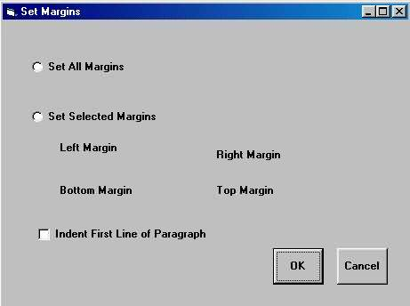
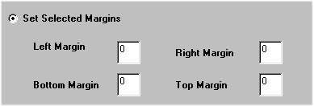
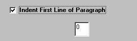

Free
computer Tutorials
|
Free
computer Tutorials
|
|
 HOME
HOME
|
Stay at Home and Learn | ||||
|
Cascading Style Sheets Adding Styles to your HTML |
|||||
|
Set New Margins
Your HTML Editor comes with one more in-built Class Selector - Set New Margins. This Rule allows you to specify how far from the left you want some text to be positioned. We'll see how it works now. So create a new web page. Type in one or two paragraphs of text (they needn't be long paragraphs - two lines will do). Then do the following:
 You have three choices on the dialogue box: Set the size of all the margins on the web page; Set only the margins that you select; and indent the first line of every paragraph. The first two options are Either/Or. You can choose to set all the margins OR selected margins. The third option, "Indent First Line of Paragraph" can be set either by itself or with one of the other two options. Click "Set All Margins" and you'll see this: The only thing you need do is to type a value in the text box. This will set space around your entire page. Try a value of 5 and see what happens when you save your web page and view it in a browser. If you click "Set Selected Margins, you'll see this:  Type a value in a text box to set that margin. If you leave a zero in the text box, that margin won't be set. Clicking "Indent First Line of Paragraph" will give you this:  Type a value in the text box for your paragraph indent.
Something like 2 or 3 is ideal. <HEAD> <STYLE> P {text-indent: 3em;} </STYLE>
However, the margins properties are in a Class Selector called Margins. With this HTML Editor, you have to apply the Class Selector in order to use it. So do the following:
<DIV CLASS = Margins> </DIV> When you apply the margins to a paragraph of text, it would look like this: A Paragraph of Text. A Paragraph of Text.
A Paragraph of Text. A Paragraph of Text. A Paragraph of Text. A Paragraph
of Text. A Paragraph of Text. A Paragraph of Text. A Paragraph of Text.
A Paragraph of Text. A Paragraph of Text. A Paragraph of Text.
Now that the HTML selector for the P tag have been set, all the first lines of paragraphs on the page will be indented like this: A Paragraph of Text. A Paragraph of Text. A Paragraph
of Text. A Paragraph of Text. A Paragraph of Text. A Paragraph of Text.
A Paragraph of Text. A Paragraph of Text. A Paragraph of Text. A Paragraph
of Text. A Paragraph of Text. A Paragraph of Text.
And that wraps up the basics of Cascading Style Sheets. There's a fuller list of the Styles you can apply to your web pages in a help file we've produced. You can download the CHM file by clicking here: Download the Style Sheet Reference Guide The Properties and Values are shown, along with examples of what they look like. Experiment with them, and see how they work - Good luck. <--Back to the Style Sheets Contents Page View all our Home Study Computer Courses
|